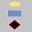
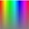
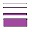
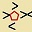

Flow Chart / Software Schematic Programmer Manual
Flow Chart
Chapter 1 Abstract
Chapter 2 User Interaction
Chapter 3 Window Views
Chapter 4 Objects on the Screen
Chapter 5 Importing/Export file formats
Chapter 6 Support Tables
General:
‘/ComputerLanguageDialect’ ComputerLanguageCase ComputerLanguageComment ComputerLanguageExtention ComputerLanguageMultiLine ComputerLanguageProcess ComputerLanguageVariableNameCharacters
Programming Language:
Macro Text /Program /Option /Delete /ThisCode /Key Word /Function /Operator /Set_ /Order
Support Tables:
Symbol:
/Name /Point /Line /NameOfFile /Stroke /Notes /Version /Author /Opcode
Flow Chart:
Chapter 7 How to use Flow Chart:
For programming languages
For Data Flow Programming
As a Hardware Schematic simulator.
Chapter 7 Support Tables Color Table Data Type Table
Chapter 1
Flow Chart Computer Language is an attempt to be able to program in any computer language via the use of visual flow chart. A flowchart is most times thought of as the logical flow of a program. A Data Flow is a program method where each 'symbol' works when all of the required data arrives to it, and has no logic paths. And a software schematic has both logic and data flow. But for marketing reasons Flow Chart Computer Language program will be referred to as Flow Chart Computer Language program.
Flow Chart computer language is also made to be used by anyone, in any spoken language. It is designed to be used with graphics and not text based programming. This means that it can be used by anyone weather they know the letters used by mostly European countries or one of the hundreds of written a that does not have AaBbCc.... Flow Chart is intended to be used mostly without language. It will become more language independent as versions become written.
Flow Chart computer language could be used for a number reasons. It allows the source code for a program to be documented in a format that is more easily understood by anyone. It is made so that the program can be converted to any new language that comes along (if that language can support what the functions of the flow chart does. It is not intended for a spoken, written, or programming language. People who speak English should be able to use the process as easily as someone who speaks or writes in another languages.
Flow Chart is an icon, picture oriented representation of what the source code of a computer program is doing. It is then easier to understand for non computer programmers. Providing of course that they symbol designs makes sense to everyone. There is an assumption that certain symbols have common universal meaning. The stop sign, a circle with an X through it, A stick figure of a man, or a woman, these all have universal meaning. Instead of Read, Write, which only has meaning in English. Read and Write (or some form) is used in most programming languages. But you have to specialize in each computer language to understand what is happening in the computer program. Since each symbol of a Flow Chart can be changed with how it uses the logic and data flow, changing the 'MacroProgram' text in the symbol will then change it to another programming language, or to the language of the users compiler. This means that anyone that can understand a flow chart or schematic of any kind can also understand what the program is doing.
The Flow Chart program translates from or to almost any programming language. Of course, like anything new and complex these first versions will have lots of problems. With the hundreds of dialects of just the BASIC computer language, it would be impossible to code and test for every one.
The symbols that make up the Flow Charts can be customized to (most) any computer language. And so conversion between computer languages can be made on a line to line conversion. This should make it easier to translate any computer language into another computer language by changing each of the symbols macro text that creates the computer source code (do-able, but not easy). The only requirement is that the programming language has a flow of logic, and uses variable names to keep track of the data going from one statement to another. It will not take into consideration the inherent advantages or pitfalls of each computer language (Yet).
The Flow Chart is made up of two basic units, The Symbols and
paths between Symbols.

Symbols are made up of a number of parts. Simple lines that are to be displayed to show what this symbol does (IE.: a square box for a process, a diamond for a decision, a keyboard for getting keyboard input, and so on. Since the symbols are made up, there is no limit to the number of symbols. The limit to the number of symbols is the amount memory that the computer has usable. Symbols can be made from nothing, or automatically by typing in the program code. (or importing an entire program, where syntax is derived and symbols made.) Symbols can be changed and modified as needed. Symbols require:
A unique name for each symbol.
Colored lines that make up the picture that this symbol shows on a flowchart.
Points where paths connect to this symbol. And each point has
A data type for each point. Such as integer, real, string, record structure and so on.
Macro code that is used to created the actual program source code text.
Names in the macro code must match the point names where the names of the paths are replaced. This makes a symbols represent the syntax of the computer language basically.
Optionally also:
The the original file name where the symbol came from and goes to (optional, it is also where the symbol can be rewritten to).
The version of this symbol.
The syntax of the macro. When a new symbols is made from source code, or if the program text is change it will update the syntax.
The notes about this symbol.
The author of the symbol.
The stroke mouse movement that selects this symbol. (not yet implemented)
Flow Chart:
The second basic unit is a flow chart diagram.. The flow chart is what the program does. It shows the flow of logic and data from one symbol to another, This represents what a computer program does, when is to move data around, to test and perform computations on. The symbols can be as simple as a single machine instruction to a complete subroutine. Flow chart can also do such things as create batch files to run programs to create a system. The flow chart is made up of three basic items.
Paths (shown as colored and styled lines) that connect the symbol points together. They show the flow of logic, and data and information.
Symbols (from above,) which are what each step of a program is doing.
Sometimes paths will have connected to them a starting value, or a constant of the data.
Chapter 2
 . . . . . . Flow Chart Screen – will take you to the flowchart screen. The tool strip has the following buttons.
. . . . . . Options - will take you to the Options screen.
. . . . . . Add Point – Will put a new point on the symbol graphics area. Before the add point button is enabled, The select the datatype drop down must have been used to select the default data type. and a point name must be entered into the text area of the tool strip. All of the other drop down buttons have the defaults set, but can and should be changed before the next point is placed. (unless it is the exact same thing again.
. . . . . . Add Line – Will start a line with mouse button pressed down, and stop the line where the mouse button is release. It will use the color from the defaults from: The selected color, The select line style, The selected line width,.
. . . . . . Move – will the select the closest point to the mouse button is pressed down, and move it to where the mouse button is released.
. . . . . . Delete – Will delete the first closest point when the mouse button is released. (advice, move the point/line that you want to release to a remote/separate location, to make sure that is in fact what you want to delete.)
. . . . . . Start New Symbol – will clear everything to start a new symbol, note if you just type over a symbol name, that will rename that symbol and everything that references. Only if you start with a blank symbol name will it make a new one.
The second line of menu buttons:
. . . . . . Select the symbol - This will select the symbol to work on. (Future will be by other methods also such as with a movement of the mouse and also by an ICON of the symbol.). Going through the list of symbol will display each one in the symbol screen. You can also import more symbols into the current flow chart.
. . . . . . Rotation: Select a direction for a default rotation of the symbol. (Default Flip, Flop, Rotate90, Rotate180, Rotate270, FlipRotate90, FlipRotate180, FlipRotate270, FlopRotate90, FlopRotate180, FlopRotate270, FlipFlop)
 .
. . . . . Data Type: Data typing is very important to some languages
and operating systems, while not to others. This will give a list of
all of the data types currently available. (Note first version does
not have arrays, lists, fields, structures, and other data types that
have offsets from the base to the item.).
.
. . . . . Data Type: Data typing is very important to some languages
and operating systems, while not to others. This will give a list of
all of the data types currently available. (Note first version does
not have arrays, lists, fields, structures, and other data types that
have offsets from the base to the item.).
. . . . . . Line Style - Line styles include solid, dot, dash, dash-dot, dash-dot-dot. There is no meaning of the line style at this time. Only use solid at this time.), .
 . . . . . . Color: This is used to select the name of the color of lines,. Data types also use the same color names to make points and paths..
 . . . . . . Width and size. This sets the default line and point size (Note: paths get their color and width from the data type used.)
. . . . . . Input/Output:. This defines if a point is asking for input or giving output or both:


. . . . . . Byte Size:. This is the number of bytes for this point.
. . . . . . Path start / Path end - This is to select the start and end of paths..

The user can basically do things with and to symbols.
Selecting a symbol on either the symbol or flowchart screen will make it the next to be placed on the flowchart and the symbol that will come up to be edited.
They can create a complete new symbol from scratch.
They can modify a symbol with the symbol screen.
A Flow Chart is drawn by selecting a start symbol and placing it on the screen. This is done one of two ways.
To select a symbol one of three ways.
You can select the symbol button,. Here is a drop down of all of the currently known symbols you have included in the current Flow Chart.
You can also move the mouse in pattern that the symbol has defined as it's stroke. This will then select a symbol to place. The symbol will be placed at the location of the mouse when you lift the button.
The third method type in the import command (or open an import file) (More on that later in the import format)
All programs must have a starting location. Even subroutines and functions (device drivers, etc) must have a start symbol. This shows the start of a program (or in the case of device drivers multiply entry points to start from), a subroutine, or a function,, So the first symbol that you define should have Start as it's name (Which is not the same as the subroutine or function name that is defined in the program code of the symbol, more on that later. There is always a start symbol when the program starts up. You will have to overwrite that with what ever computer language/subroutine/function that starts that language (In the case of COBOL, it might have the entire environment section)
A Flow Chart is expanded by placing more symbols on the Flow Chart. This will show what else the program is to do. A Flow Chart is continued to be completed by adding paths (Connecting lines) between dots (connection points with V pointers showing input, output or both.) of the symbols, making sure that you match the connection points colors and widths of the two symbol together, if not an error messages warns you that you have two different data types, which for languages like Dartmouth basic you can almost completely ignore.). The color and widths is the represents the size of the data. (It does not mean that larger width paths are larger sized data. only means that the same size width need to match each other. It might be because a wide path might mean that this is an import bit of data passing here.
After the Flow Chart is complete then save the Flow Chart.
The next step is to generate and save the programming code for this program from this Flow Chart. If you have not errors then you should have a program ready for what ever compiler you are using. (And future versions should compile into assembly language directly for watching the Paths of the Flow Chart showing what the program is doing)
The next step is to print out your Flow Chart (for documentation and checking).
This is done just like making a Flow Chart, except that you you are working on the symbol screen. Here you work with points and lines.
To add a line, you need to have the color that you want selected in the color drop down.
To add a point, you need to have the data type that you want in the drop down. start with your own symbol graphics, or another one and then make a Flow Chart of what your new symbol does.
The third thing that you can do is to make a new symbol that has the programmers code to insert into a Flow Chart
This lowest level symbol has the graphic picture for the symbol that you see on the screen and in the printout.
A symbol also has the special programmers code inside it.
This code is nothing more than programmer code that replaces the names of the Paths with with the names of the connection points inside the text of the program code.
You can 'drill into' a symbol and bring up it's definition
Each symbol has a definition screen of what the symbol looks like.
But each symbol is one of two types
First is just another Flow Chart (because it's a subroutine in that language)
Or it is the bottom level definition of the computer language.
The bottom level is in text. It defines how the graphics is converted into text. So the computer language text will be displayed.
How to think about what happens
Think of each symbol as doing something. Weather it is just adding two numbers together or sorting megabyte data files.
Think of the Paths that go between the symbols as the data flowing between symbols.
Some symbols will use data Paths (inputs), others will set data Paths (output), and others will do both at the same time. Each symbol should show that in the symbol graphics.
Chapter 3
.
This program is used to make a new Flow Chart of a computer program, convert an existing computer language to the flowchart graphics.
A Flow Chart has to have one symbol named start.
This is the entry point of programs. All programs start somewhere, and this is the point that they start from. Subroutine also have a starting point. So a flowchart that is just a subroutine has one start symbol in it.
Subroutines does every thing that a program with a start does, except it starts with something name other than a start (or main()). It usually starts with a programmers made up name for a subroutine.
A start symbol could do any of the following.
Be the beginning of a program.
Be the entry point of a function, or subroutine.
Be the entry points of a device driver or other system routine.
Be the start of a batch file, and other computer directives.
A function is something left over from the old programming school where a single value is return by a subroutine, other than that, it is exactly like a subroutine. Now days most modern languages can and do return multiply values either by passing an address (sometimes called a by reference) to the variable to be changed, or changing globally defined variables.
Symbol Pictures:
Symbol Graphics is what users see when they are writing/checking/reviewing programs. It is and should be the only thing that programmers need to use to write programs, just like they only need to use the programming language for most of their text based written programs now.
The graphics is made up of only two atoms.
First is simple lines that show on the screen to tell what they symbol is. It can be anything from a simple box, to a complex drawing showing part of, or the complete, internals of a CPU. The lines can have colors to help show what this function does.
Second is points of where Paths can be connected to this symbol. The points show:
Arrows showing, input, output, both, of if each is optional.
The color of the type of data/logic that can come and go.
Point can also have the option of displaying:
Symbol macro text
The first kind of text is the actual text that would appear for the underlying language to do this function that the graphic symbol implies.
The second kind of text is where the 'variables' would go. This would be replaced with either a computer generated name, or the name of the line/path from the Flow Chart
For example
The simple computer language code could look like:
A = A + B
This would be written in the Symbol Import file as
/Program= {[(PointA.pathname))]}} = {[(PointA.pathname)]} + {[(PointB.pathname)]}
You can quickly see that the names of the lines (Paths) connect the symbols together. This is the path that the data moves, just like the path that the logic moves.
Now that the syntax is encoded, when the graphics symbol is used by the programmer in a FlowChart, The replaceable text for the variables would be replaced with the names of the paths that are connecting the points in the graphics symbol when it is used. So it could be
Assuming that the paths are named Total and Ticket_Item
Total = Total + Ticket_Item
The original filename of the symbol is also kept along with numerous other items of information.
An Opcode is for symbols that will (eventually) create the object files and programs and interpretive running.
The 'stroke' is an encode list of mouse movements that define using this symbol from the FlowChart screen with out having to go to the symbol screen to select each symbol.

This screen is the control of the program flow. It only has three kinds of objects.
In the graphics screen, Paths which are the lines between symbols. Symbols, which are from the symbols library
Buttons
FlowChart – This will return to the FlowChart screen
Start New Symbol – This will clear out all current information and start a new symbol
Add Point – This will add a point with the current select datatype/color/width... There is a bug, you cant name/rename a point (Oops)
Add Line – This will add line of the selected color. It starts where the mouse is pressed, and ends where the mouse is released.
Move – This will select something where the mouse is at when the button is pushed, and move it to where the mouse button is released.
Delete – This ill delete something where the mouse button is pushed.
Remove Symbols – This will remove all symbols that are not in the flowchart.
Dump – This will make a file of everything inside the data structures to the root directory \FlowChartDump.txt
Options – This will call up one of the options screens
Check All – This calls up a subroutine that checks everything that Could be wrong with anything it can think of and puts error messages on the flowchart of the possible problems that it found.
Text Areas
Symbol Names – This Drop Down has all of the symbols in memory. Selecting one will then be what is placed on the FlowChart. (Mouse movement stroke will make that symbol selected to be placed on the FlowChart)
Status Text – This is simply the status of messages of the program working.
Symbol Name – This is the currently select symbol. Change it before you use the Start New Symbol Button. It will use what ever name is here.
Data Type – This drop down has all of the symbol types. When you select a symbol type (For points) it will change the color name.
Description – This is the description of this data type, so you can know what someone made this datatype for. (Such as AccountRecievableRecord...)
Color Name drop down – This has a list of all of the colors that you can use for lines.
Input/Output – This has a list for the point definitions. If you select input then an arrow will be in the symbol at that point pointing inward. This is to let you know that that point wants data, and of course output points outward, and input-output points both ways.
Width – This is used width of paths.
Bytes – This is to show how many bytes this data type uses.
Syntax text – This is either the syntax made for this symbol, or the program has made for the macro code that it has.
Macro Code text – This is the macro code that is used to make the program. The Syntax, and Macro code are closely related.
99.9% of the time you will use one of the following two (Which connects a path to a placed symbol)
The name of the path connecting to this symbols point
{[(PointName.PathName)]} or {[(PointName.Variable)]}
Buttons:
As of this writing you can replace inside of the text with:
{[(SymbolName.name)]}=Symbol Name
{[(SymbolName.index)]}=2 (This give an internal index that is useless)
The location of the symbol in the graphics
{[(SymbolName.x)]}=500
{[(SymbolName.y)]}=1000
{[(SymbolName.Rotation)]}=Default (from the rotation table)
{[(SymbolName.DataType)]}=Byte (From the datatype table
{[(SymbolName.OpCode)]}=nop
{[(SymbolName.notes)]}=Made with DeCompile
{[(SymbolName.FileName)]}=SymbolSyntax.symbol (If missing will be created)
{[(SymbolName.Author)]}=Your Name
{[(SymbolName.Version)]}=1
{[(SymbolName.Stroke)]}=ABC (The letters A through P)
{[(SymbolName.Pointer)]}=52 (This is an internal index that is useless)
{[(SymbolName.xa)]}=500 (The X of the connected path)
{[(SymbolName.ya)]}=1000 (The Y of the connected path)
{[(SymbolName.code)]}={ {[((number))]}}: A = B + C: Go To { {[((number))]}}:
{[(PointNames.name)]}=Point Names
{[(PointNames.index)]}= 53 (Meaningless internal index number)
The location of the point in the graphics
{[(PointNames.x)]}= 5250
{[(PointNames.y)]}= 9750
{[(PointNames.IO)]}=both
{[(PointNames.Rotation)]}=Default
{[(PointNames.Datatype)]}=Byte
{[(PointNames.PathName)]}=Path Name (The path at this location)
{[(PointNames.Variable)]}=Point Name (The name of the Point of this symbol)
The location of the Path connecting to this point
{[(PointNames.PathX)]}= 4750 (The location of the Path)
{[(PointNames.pathY)]}= 9750 (The location of the Path)
The distance between the placed symbol point and the Path.
{[(PointNames.Distance)]}=500
{[(PointNames.DataTypeName)]}=Byte
{[(PointNames.DataTypeDescribtion)]}=8 bit, usually a character
{[(PointNames.Bytes)]}=1
{[(PointNames.DataTypeColor)]}=Orange
{[(PointNames.Width)]}=1
'Future not done as yet
Comments (optional, which are of course ignored.) {[(SymbolName.Notes)]}
Values of constants with original starting values (optional) {[()]}
Number of constants connected to a path {[()]}
Value of the Path (for any Constants connected to a path). {[()]}
Number of connecting end Points in the Path. {[()]}
Number of inputs in the Path. {[()]}
Number of output in the Path. {[()]}
Number of Inputs/output in the path {[()]}
Path data type information, from the datatype file. {[()]}
Color information of the data type of the Path {[(PointName.DataTypeColor)]}
Width of the Path data type. {[(PointName.Width)]}
Style of the Path data type. {[()]}
Number of errors caused in this Path {[()]}
Number of warnings caused in this Path {[()]}
First Error in this Path. {[()]}
The symbol opcode (if available) {[(SymbolName.OpCode)]}
Symbol made for this computer language {[(?.language)]}
The author of this symbol. {[(SymbolName.Author)]}
The version of this symbol {[(SymbolName.Version)]}
The mouse movement that selects this symbol. {[(SymbolName.Stroke)]}
/Ignore=, Anything that starts with this will be ignored by FlowChart.
/computerlanguagecamefromlastline
/Language = Language Name IE: C, C++, R, F, Basic...
/ComputerLanguageCase = {Yes, No}
/ComputerLanguageComment = Language Comment string IE: rem or ' or /* or // etc.
/ComputerLanguageExtention = Language Extension IE: bas
/ComputerLanguageMultiLine = Language Multi-line IE:_ to continue on the next line
/ComputerLanguageVariableNameCharacters = Language Variable Name Characters IE: characters that are allowed besides letters and digits
/Options=number,{0,1} Turns this option or message on or off.
/Path=x1, y1, x2, y2, Data Type Name, Path Name
Data details:
code, x1,y1,x2,y2, Rotation name, Option Name, Data type Name {[(actual line of source code?)]}
This line segments from the points in one symbol to the points in another symbol inside a Flow Chart. The Data Type matches the Data Type from the Point in the symbol to make sure that the user has matches them correctly.
/Use=x1, y1, Rotation, xx, Name of the symbol called
code, x1, y1, rotation name, name of the symbol
In a Flow Chart this is the symbol that is displayed for the user to connect his lines to.
The rotations with flip or flop gives a mirror image of the symbol. Flip gives a flip mirror image sideways, then a flop mirror image up and down, so flip-flop will first give a mirror image sideways and a flop will give a mirror image of that up and down, turning it back forward. Which is the same as Rotate180.)
Syntax:
/Constant=x1, y1, Constant Value
code, x, y, constant text at this point
The X, Y must be on the end or turn of a path.
Syntax:
NAME is the name that you give to the following symbol. This also the end of the last symbol and the start of the next. The name must be the same as the name in the /use command
Syntax:
/Language=Computer Language
X and Y are used to display this as a comment on the screen
This is for which computer language that this symbol works on. You can allow the symbol to have output in many different languages (one at a time).
For example:
/Language=BASIC
/Language=Visual Basic
/Language=C
/Language=C++
/Language=FORTRAN
/Language=COBOL
/Language=MyOwnPersonComputerLanguange
/Language=ProgramInEnglishForManagement
Syntax:
This is the computer code that is generated for this symbol for the above computer language. The reason to Flow Chart working is in how the Code is written here. The code is just generalized code with the names of normal variables replaced with what is between the {{[((Variable-name{{[((and the {{[((Variable-name{{[((of the point. The two go together.
The location is used in some languages to separate one section from another (Sort Order)
for example:
/Program=main, {{[((SUM{{[((={{[((NUM1{{[((+{{[((NUM2{{[((;
/Point=50,0,-1,integer, SUM
/Point=-200,0,1,integer, NUM1
/Point=200,100,1,integer, num2
When this Flow Chart is assembled the result replaces what ever the user has named the paths from one symbol to another with his name (If the user has not named the paths, then the computer assigns a name to each to each set of line/paths that are connected together.) So the results would look something like this in the generated code file.
My Totals=Dept One+Shoes
The /Program= lines must be in the order that they appear in the output.
Syntax:
/Point=X, Y, input/output, Data Type, Variable-name
code, x1, y1, input/output, Data Type, name of this Point
The Variable-name is replaced in exact Variable-name for the /Program that was in this symbol. Just like the example in the /Program above.
Syntax:
/Line=x1, y1, x2, y2, Color Name
code, x1,y1,x2,y2, name color
This just draws a line in side the symbol from x1,y1 to x2,y2 of what the symbol displays, it has not other function. You have lines inside a symbol to display only. You have paths inside a Flow Chart to connect the /Points inside one displayed symbol to another.
Syntax:
/Color= Color Name, {[(Alpha, Red, Green, Blue)]}, {[(Style)]},{[(Start)]}, {[(End)]}
code,name of this color, {[(Alpha, Red, Green, Blue)]}
Color values for Alpha, Red, Green, Blue must be between 0 to 255 and they are optional. Flowchart creates the standard Microsoft Color names (All 139 of them) and will output them when you export.
Valid styles are: Solid, Dash, Dot, Dash-dot, Dash-Dot-Dot
Valid for start and end are: Anchor-mask, Arror-Anchor, Diamond-anchor, Flat, No-anchor, Round, Round-anchor, Square, Square-anchor, Triangle
Syntax:
/Order= (order1,order2,(,order3,order4)...)
The order is where the source code is written out. For example, Globals should be in order1 from above, and source code should be in order4, with all of the definitions of the variables in order3 group for the subroutine order4. If any named order is not in this list then it will be added to the end. Order1 is just an example, any names can be used (like Include-section, Global-section, Main-section, Define-section, Declare-sections)
example:
/Order=(Include-Section, Global-Section), Main-Section, (Variable-Section, Code-Section, Finish-Section, Error-Trapping-Section), Other-Sections.
Other usages
Other things that FlowChart Computer Language can do is related. FlowChart can also make Data Flow Diagrams, A flow diagram is a flow chart with out any logic flow. This is done because each symbol waits until it has all of the data available before it does anything. There are a number of ways to do this. One is to simply make every data line both a logic and a data. Then a 'go subordinate' for every time that data is pub onto the path the symbols that the path is connected to will all and each test if they have all of data to execute, other wise store that bit of data and return, and when all of the data is available then it ' calls ' every data path that it outputs to.
Another way is to loop through all of the symbols and execute each one that has all of the data available. Then push / stack data on to each path. In all cases, you must push a value onto this path. and then the symbol must use it once.
Flowchart can also be used for such things as making an electrical schematic. Then make each symbol have the code to analyze the 'wires' connected to this symbol. Or think of it as each symbol is actually a chip (7400) That way each symbol/chip can analysis what it is doing, (following, logic, electric characteristics, you can check the logic, timing, the earliest and latest time.
The program does not currently allow you to make changes to these external tables, they must be edited by hand with
A program like note pad. They are ASCII files, DO NOT CHANGE TO DOCUMENT FILE STRUCTURE.
This table contains the color/types of data that line paths in Flow Chart, and the color of the connection points in symbols that they must connect to. It also contains the color of lines that make up symbols.
The following description of the file layout also shows how the fields are used:
The following are imported via a flowchart, or symbol import file.
Preceded by /Color (you must define a color before using it in a /datatype
Syntax:
/Datatype=name, Description, Bytes, Color Name, Width/Radius, Style, Reserved
Name is unique of this data type (or line color name as used in symbols).
Description is what this data type is for. It can not have comma's in its name (used as field delimiters).
This is the size of the number of bytes of this data variable (use 0 for Logic, and -1 for strings)
Name of the color in the color support table.
width/Radius
When used as width it is the width of the lines in pixels
When used as a radius size, it is multiplied by 8 for the connection points.
(Ignored for now) Style is the name of the style of the line/path/circle and must be the following.
Solid (default if absent), dotted (lines only)
Support tables.
Color table: This contains the colors of the lines and paths and text. They all use the same color support table names as defined by Microsoft. This table contains the names of the colors, It also contains optional things as the style of the line (Solid, Dot, Dash, Dot-dash) and the red/green/blue for non standard colors. All of the colors are available. They are saved each time that you save your flow chart.
Datatype table: This contains the name of the data type. Such as integer, real, double, byte. It should only contain the data types for the language that you are programming in. Such as C, Basic, FORTRAN, COBOL,. It can also have data types for the operating system that you are using (such as the datatype to interface with Windows API s). The data type also contains the color, width, and other future items.
Keyword table: They are then made for each computer language. That is how the program tells what to do with a line of code.
Operator table: They are special characters such as + - = , () {[()]} ^ & * and keywords such as 'mod' It is the grammar of each line of source code. With keywords they tell how the line of code is to be matched to the syntax operator grammar of each symbol.
Function name table, to help the flowchart program decide which symbol to match input lines of code to.
BNF type table
Don't use () a group. Define a group in its own rule
Don't use [] zero or one. Use? at the end of the word
Don't use {} zero or more. Use * at the end of the word
* zero or move
+ one or more
? zero or one
- Zero. If this happens then this rule fails
A | means or nothing between (white space) means and
Syntax is:
/Grammar = Rule-name ::= ‘literal’ Key-word Rule-name
literals are
‘0×0020’ or ‘A’ single character
‘A-Z’ or ‘0×0020-0×00FF’ letter range
‘Key-words’ Keyword must also have one of:
/Keyword=Keyword
/Operator=Keyword
/Function=Keyword
/Grammar=Rule-name ::=
‘x’ single characters
‘0×1234’ 16 bit characters
‘0×0001-0xFFFF’ range of characters
Rule-name
followed by ? If 0 or 1
followed by * if zero or more
followed by + if one or more
| means or between bars.
Note: () <> [] are not used, but otherwise like BNF...
Summary of the Import Syntax Statements allowed.
If you must make changes to the import/export file. The latest formats are listed there.
(*1) marks the input statements that allow multiply lines
/ComputerLanguageCase=no
/ComputerLanguageMultiline=_
/ComputerLanguageComment=rem
/ComputerLanguageExtention=.VB
/ComputerLanguageVariableNameCharacters=$%
/ComputerLanguageDialect_=Visual Basic
/ComputerLanguageGoTonextLine={{[((ComputerLanguageGoTonextLine))]}}
/ComputerLanguageCameGromLastLine={{[((ComputerLanguageCameGromLastLine))]}}
/ComputerLanguageProcess=C:\ProgramFiles\FCVisualBasic.exe
/Color= Color Name, Alpha, Red, Green, Blue, Style, start, end
/Datatype= Name, Description, Number of Bytes, Display Width/Radius, Style
/Name= Name
/Language= Computer Language
/Program= Sort, Code of the Computer Language with {[(Replacements)]}.(*1)
/Point= X, Y, {Input, Output, Both, OptionalInput, Optional-output, or Optional-both}. The Data Type Name, Name of Points in symbol. (*1)
/Line= X1, Y1, X2, Y2, Color Name.(*1)
/Filename= Device:\Path\File Name. Extension of where to save only this symbol (Optional)
/Notes= Notes. (*1)
/Path= X1, Y1, X2, Y2, Datatype, Name of The Path
/Use= X, Y, {'Flip', Rotate90, Rotate180, Rotate270... }, Symbol Name
/Constant= X, Y, Constant Value
/Syntax= Language Statement Syntax
/Opcode= Hex Values (&Tables) (Not used yet)
The order of the file must be
/ComputerLanguageDialect...
/Color before it is used, then (If missing the program will use Windows Default colors
/Datatype
/Name
/Point
/Line
/Use, /Path, or /Constant.
This should be the first standard of the language.
Software Schematic should have three parts, a flowchart, a symbol, support tables.
.FlowChart
The flowchart has three parts.
Displaying complete symbols on the screen/page.
. FlowChart symbol properties are the X,Y location, Rotation,
Paths going between points on the symbols.
. Path properties are an (X,Y) to (X,Y), a path name, a logic/data type.
Optionally 'constant' which are what the path value starts with. Optionally but ignored are errors of the program, such as:
1 points on a symbol not being connected.
2 logic paths that go to two symbol inputs, assume for now single liner processes, but the language is not restricted by this
3 Paths with no source, output from at least one symbol.
4 two paths connect with different names.
. Constant properties are (X<Y), The starting value (data type and name comes from the path it is connected to.
Optionally 'error' messages. When the program needs to display an error at a location where the error occurs. Or to point the user to where something needs to be changed.
Symbol
The symbol has a number of parts. It is defined inside a rectangle of from -250 to 250 in the X and Y. This is an artificial limit and might go away, if there are to many people that need/want it larger.)
Symbol properties:
. Name: Each symbol is referred to by name. You can use almost any name that could be used as a variable. It begins and ends with 'white space', white can be things like a space, tab, return, and so on. The name of the symbol. This is so that the flowchart displays this symbol by name,
. Points: Each symbol has to have the points defined.
. Point properties:
. (X, Y)
. Name of the point (This is used to create the text for each symbol. (See Macro Text)
. The Logic/Data Type of this point.
. Lines: Each Symbol must have some graphics that show what this symbol is. Usually, a flattened oval is used for the start, and also an end. An end is sometimes just a circle. diamonds are usually used for testing to determine directions of logic branches. That would include things like IF, CASE, Computer Goto, WHILE, and so on.
. Optionally Icons/Pictures. There should be Icons and pictures available also.
Support Tables
Color Table: The color table is used to be able to move from one system to another. Currently its format is based on Windows 10 Color Names. But it also has the Red/Green/Blue for other systems to create their own Color names. (See The details in import/export section)
Data-type Table: The data type table has information about a type of data this includes:
They 'should' have color and/or distinction to tell the difference data types they represent.
Second is the symbols, which has a number of items.
The symbol must have a unique name.
A symbol must have the 'program macro code', which is just the computer language code with variables replaced with {{[((names of the point{{[((.
My Exceptions to my own standard:
The File name that the symbol is contained in.
The Computer Language Of this symbol.
Notes.
Version.
Author.
Hex code for the Machine. (Only used in Assemble Language for now.)
An internal text representation of the mouse movement to identify this symbol.
A symbol should have a graphics part represented by points. They should have lines or graphics to show what this symbol does (IE: decision branch (go to, go subroutine), process (subroutine, function calls), loops (do while, for next, do until) and so on).
The points has a number of significant items.
Points must have associated with them the logic or data types (IE.: Integer, String, Floating Point) Depending on the language.
Points 'should' have a representation of the symbol using (input) or returning (output)
The lines might have colors and/or distinction but nothing else of importance.
Third is support tables.
A support table of color names is helpful.
Showing at least the colors available, or select-able from a pallet of colors
A support table of data types is helpful
Showing the name of the data type (IE.: byte, integer, Floating Point, or language dependent for C, C++ in Windows and the new C Standards).
{[(My Exceptions)]}
Color Table:
Alpha, Red, Green, Blue of the color for those systems that can use it.
The types of start and end points styles that can be used. (Currently turned off)
The line styles that can be used. (Solid, Dot, Dash etc.)
Data Type Table:
Has a description of the data type.
Has a name of a color for this data type.
Has the size (in bytes) of this data type.
Has the width of the line, with a minimum of 3 for this data type.
Over-writable Internal Support Tables:
Direction Table: (A flip or a flop will reverse. A symbol can appear 8 ways)
Number Named Top-right ? Top/Bottom Right/Left
Default
Rotate90
Rotate180, FlipFlop
Rotate270
Flip
FlopRotate180
FlipRotate90
FlopRotate270
FlipRotate180
Flop
FlipRotate270
FlopRotate90
FlopRotate90,
Line Styles (Windows Dependent):
SOLID, dash, dot, dash-dot, dashdotdot
Line start/finish (Windows Dependent):
Anchor-mask, Arrow-anchor, Diamond-anchor, flat, No-anchor, Round, Round-anchor, Square, Square-anchor, Triangle
Computer Language Class: (Directories: /Languages/*.)
Assembly , Bash , Basic , C , C# , C++ , COBOL , Clojure , Dart , Dos , Elixir , Forth , FORTRAN , Generic , Go , Power Shell , Java , JavaScript , Kotlin , Lisp , Objective C , Pascal , Perl , PHP , Python , R , Ruby , Rust , Scala , SQL , Swift , Type Script , VBA , Web Assembly
After selecting the language you also have to either load the keywords, or start up the language dependent program to preprocess the inputs. (See Fclanguage)
Language dialects: files in /languages/Language-class/Dialect ’ Definition.symbol’
Default Windows Color Names (Anything will display black)
(Windows 10 dependant colors) AliceBlue, AntiqueWhite, aqua, aquamarine, Azure, beige, bisque, Black, BlanchedAlmond, Blue, BlueViolet, Brown, BurlyWood, CadetBlue, Chartreuse, Chocolate, Coral, CornflowerBlue, Cornsilk, Crimson, Cyan, DarkBlue, DarkCyan, DarkGoldenrod, DarkGray, DarkGreen, DarkKhaki, DarkMagenta, DarkOliveGreen, DarkOrange, DarkOrchid, DarkRed, DarkSalmon, DarkSeaGreen, DarkSlateBlue, DarkSlateGray, DarkTurquoise, DarkViolet, DataTypeError, DeepPink, DeepSkyBlue, DimGray, DodgerBlue, Firebrick, FloralWhite, ForestGreen, Fuchsia, Gainsboro, GhostWhite, Gold, Goldenrod, Gray, Green, GreenYellow, Honeydew, HotPink, IndianRed, Indigo, Ivory, Khaki, Lavender, LavenderBlush, LawnGreen, LemonChiffon, LightBlue, LightCoral, LightCyan, LightGoldenrodYellow, LightGray, LightGreen, LightPink, LightSalmon, LightSeaGreen, LightSkyBlue, LightSlateGray, LightSteelBlue, LightYellow, Lime, LimeGreen, Linen, Logic, Magenta, Maroon, MediumAquamarine, MediumBlue, MediumOrchid, MediumPurple, MediumSeaGreen, MediumSlateBlue, MediumSpringGreen, MediumTurquoise, MediumVioletRed, MidnightBlue, MintCream, MistyRose, Moccasin, NavajoWhite, Navy, OldLace, Olive, OliveDrab, Orange, OrangeRed, Orchid, PaleGoldenrod, PaleGreen, PaleTurquoise, PaleVioletRed, PapayaWhip, PeachPuff, Peru, Pink, Plum, PowderBlue, Purple, Red, RosyBrown, RoyalBlue, SaddleBrown, Salmon, SandyBrown, SeaGreen, SeaShell, Sienna, Silver, SkyBlue, SlateBlue, SlateGray, Snow, SpringGreen, SteelBlue, Tan, Teal, Thistle, Tomato, Transparent, Turquoise, Violet, Wheat, White, WhiteSmoke, Yellow, YellowGreen
Default DataTypes (expanded by external table from flowcharts)
Bit, Byte, errored, erase, Floating, Int16, Int32, Int64, INT8, Integer, logic, Long, Word
Data Type properities:
/Datatype=name, Description, Bytes, Color Name, Width/Radius, Style, Reserved
The name of this symbol (loading another with the same name will just sometimes add, and sometimes replace the existing system properties)
A Description. Do not use comma's in the description because they are required in all imports instead of white space
The number of bytes that this data type requires.
The name of the color that this data type paths and points will be display with
The width of Paths and the size of symbol points.
The style (Solid, dot, dot dash etc Windows 10 dependant)
The line start and end. Arrow, flat, etc. (Windows 10 Dependant)
Flow Chart : Is a graphical representation of the logic and data paths of a program connecting the symbols together.
Symbol : Is a graphical representation of a basic unit inside a Flow Chart made up of lines and points. It contains lines, points, and other information to make the Flow Chart into a program.
Line : Is a graphical line in a symbol. It has color, but no width.
Path : Is a graphical line in a Flow Chart that represents the logic, or data going from one symbol to another. It has a color and width representing the type of data that that is moving in the program.
Point : Also called a connection point is in a symbol that is where the Paths from different symbols connect. It show where a path goes into, and comes out of a symbol. It has color and width for this type of data for this connection.
Connection Point: Is another name for Point.
Color : This is a name that Windows has a set of colors for. (Currently new color pens are not allowed, only the existing 139 color names.)
Data Type : This refers to the type of data that they symbol point is looking for. Some computer languages get very picky about this (Like C++), other computer languages could not care less (like BASIC).
Quick Start
For starting quickly, first start the FlowChart Computer Language Program.
This can be done in a number of ways. In Microsoft Windows, press the right mouse button over the windows start icon. This will let you see all programs that are installed. . Then select FlowCHart. You can press the Windows key. If you need more help on how to install or start a computer program refer to your owners manual, or the Internet.
After the FlowChart program is started, there will be a splash screen displayed over the flowchart screen. They will both disappear and the option screen will display, with only one button enabled.
The button will allow you to select the computer language. The list will have generic computer languages, and some specific ones for special usage.
Early versions of the program made you select the computer language and then input the symbol files needed for that language. Later versions loaded them automatically.
If you have to load the Symbols, Which means keywords, syntax(s), and so on, then do the following steps
1, Select the FlowChart button (Far Left button)
2. Then on the Flowchart Screen, Select the third button (A file folder)
3. Then on the File Input Output screen select the folder with an arrow pointing up (To open a file)
4. Find and select the symbol file that you require.
a. You might need to repeat opening symbols. depending on your language.
b. You will need a Keyword symbol file,
c, An operator symbol file.
d. a function keyword file.
f. One or more files for the symbols syntax.
g. OR it might all be contained in a single file of the computer language name,and the extension of *.Symbol.
5. When you save a FlowChart all of the symbol files will be saved into the flowchart file. The symbol files are the basis on which FlowChart uses to 'translate' to and from a computer language. Different symbol files are required for different languages, and dialects of languages,
6. Next go back to the Symbol Screen. (Second button from the left)
7. The Symbol screen has two rows of buttons. The top row is to edit symbols. The second row is the defaults that are applied to editing. Each button needs to have a default selected. The buttons shows what the current default is.
8. Last enter a name of the next point to add. The text box to enter that is at the right of the buttons. (This will not be used until you add a point to a symbol, but needs to be there anyway (for now)
9. Goto the FlowChart screen again(first button on the left)
10. Select the select a symbol button. A drop down will appear with the defined symbols for this language.
11. You can now place that symbol on the Flow Chart.
12 To place paths (lines connecting the logic and data, The button with a line and circles at the ends is the 'make a path connection.
13. Where ever two paths end at the same location, both must have the same path name (The path name is actually the name of the variable in the source code.)
14. Continue placing symbols and connecting them with paths.
Additional Notes:
1. A symbol can be made by typing in a line of source code. The program will look for a symbol that matches the syntax and place that one the Flowchart with Paths connecting them. If no syntax matches, it will create a symbol, and then place that one one the Flowchart.
2. A FlowChart can be started from the File Input/Output screen with the text to flow chart button.
a. writing on the left of the button and symbols on the right makes source into flowchart
b. writing on the right of the button and the symbols on the left makes the source code form the flow chart.
2. If the auto router is turned on, it will make paths to connect any two paths with the same name. (A background task, so it might take a while to 'catch up' to where new paths and data is entered.
List of some BASIC dialects:
1771-DB BASIC, 64K BASIC, AbasiC, ABC BASIC, ACE, Advan BASIC, Advanced BASIC, AlphaBasic, Altair BASIC, Altair Disk Extended BASIC, AmiBlitz, Amiga BASIC, AMOS BASIC, Apple BASIC, Apple Business BASIC, Applesoft BASIC, APU BASIC, Aribas, ARMbasic, ASIC, Assembler, ATT, Atari 2600 Basic Programming, Atari BASIC, Atari, Microsoft BASIC, Atom BASIC, AttoBasic, AutoIt, B32 Business Basic, B4A, B4i, B4J, B4R, B4X, BaCon, BAIT, Banna Basic, Bas, Bas7, BASCOM, BASIC 2_0, BASIC 7_0, BASIC A+, BASIC Advanced, Basic For Qt, BASIC Plus 2, BASIC Programming, BASIC XE, BASIC XL, BASIC-11, Basic-256, BASIC-52, BASIC-68K, BASIC-E, BASIC-II, BASIC-PLUS, BASIC_UX, BASIC_WS, BASIC_Z, Basic+, BASIC09, Basic4GL, BASICA, BASICODE, BasiEgaXorz, batari BASIC, Bazic 86, BBC BASIC, BBx, BCX, BEOWULF, Beta BASIC, BetterBASIC, BI-280, Blitz BASIC, Blitz3D, BlitzMax, BlitzPlus, Blunt Axe Basic, BS Basic, Bsisith, BT-Basic, BURP, Business Basic, bwBASIC, BXBASM, CA-Realizer, Caché Basic, CARDBASIC, Casio BASIC, Cassette BASIC, CBASIC, cbasPad Pro, CBM BASIC, CellularBASIC, CGIbasic, Chinese BASIC, Chipmunk Basic, CipherLab Basic, CocoaBasic, CognosScript, Color BASIC, Commodore BASIC, Commodore Basic V2, Compaq BASIC for OpenVMS, CoolBasic, CPX-Basic, Creative Basic, Cubloc Basic, Cybiko B2C, Cypress BASIC, D-Lib, D3_Pick, DAI BASIC, DarkBASIC Professional, DarkBASIC, Dartmouth BASIC, Data General Business Basic, Data_BASIC, Databasic, DBASIC, DEC BASIC, Decimal BASIC, Dr Ts, T-BASIC, DragonBASIC, Easy AMOS, Emergence Basic, Envelop Basic, Envision Basic, Epson SPEL+, ESP8266 BASIC, ethosBASIC, Extended Color BASIC, Famicom BASIC, FaST Basic, FBSL, FirST Basic, FreeBASIC, FutureBASIC, FUZE BASIC, G-BASIC, Galaksija BASIC, Gambas, GamesBasic, GBasic, GeoBASIC, geoBASIC, GFA BASIC, GLBasic, Gnome Basic, Graphics BASIC, Great Cow BASIC, GW-BASIC, HBasic, High Tech BASIC, HiSoft Basic, HotBasic, HotPaw Basic, HP BASIC, HP BASIC for OpenVMS, HP Instrument BASIC, HP Time-Shared BASIC, HRAST-BASIC, HTBasic, HuBASIC, Hummingbird Basic, IBasic, IBM Cassette BASIC, IBM VS-BASIC, ICPL, INFOBASIC, Initial Programming Language, Integer BASIC, Internet Basic, IS-BASIC, IWBasic, iziBasic, Jabaco, JBasic, JR-BASIC, Just BASIC, jvmBasic, KBasic, Kool-Bee, KoolB, Learn to Program BASIC, Liberty BASIC, LikeBASIC, Locomotive BASIC, LotusScript, LowRes Coder, Luxor Basic, LxBasic, M2000 Interpreter, MacBASIC, MAI Basic Four Business Basic, Mallard BASIC, MapBasic, MasmBasic, MBASIC, MELFA BASIC, MelloCOMPLEX, METRIC-BASIC, MICOL BASIC, Microsoft BASIC, Microsoft BASICA, Microsoft GW-BASIC, Microsoft Level III BASIC, Microsoft Small Basic, Microsoft Visual Basic, MinimalBASIC, MITS 4K BASIC, MITS 8K BASIC, MMBasic, Mobile BASIC, MOLE Basic, Monkey, Moonrock Basic Compiler, Morfik Basic, MS BASIC for Macintosh, MSX BASIC, MTBASIC, NAME Basic, N82-BASIC, N88-BASIC, Nevada BASIC, NorthStar BASIC, NS Basic, nuBASIC, Oasis Basic, OBASIC, Omikron Basic, Open Programming Language OPL, OpenBASIC, OWBasic, Panoramic, Parrot BASIC, PBASIC, PeayBASIC, Phoenix Object Basic, PIC BASIC, PIC BASIC Pro, PICAXE BASIC, Pick_BASIC, PlayBASIC, PowerBASIC, Processor Technology, Profan, Professional Development System, ProvideX, PSX Chipmunk BASIC, PureBasic, PyBASIC, QB64, QBasic, QuickBASIC, QuiteBASIC, RapidQ, RBScript, RC Basic, REALbasic, Revelation BASIC, RFO Basic!, RM Basic, RobotBASIC, Rocky Mountain BASIC, Run BASIC, S-BASIC, SAILBOAT, SICK, SAM BASIC, SAX Basic, SBAS, ScriptBasic, sdlBasic, SEGA BASIC, Sharp BASIC, Simons BASIC, Simple BASIC, SIMPOLSinclair BASIC, Small Basic, SmallBASIC, smart BASIC, SmartBASIC, SmileBASIC, SOBS, Softworks Basic, Sony BASIC, SpecBAS, Spectacle BASIC, SQABasic, ST BASIC, StarBasic, StarBasic, StarOffice Basic, STOS BASIC, Submarine BASIC, Super Game System BASIC, SuperBASIC, SuperCharger Disk BASIC, SV extended BASIC, T-BASIC, TBASIC, Tektronix, Terminal-BASIC, THEOS Multi-User Basic, thinBasic, TI BASIC, TI Extended BASIC, TI-BASIC, Tibbo Basic, Tiger-BASICTiny BASICTML BASICTRS-80 Level I BASICTRS-80 Level II BASIC, TRS-80 Model 100 BASIC, True BASIC, Turbo Basic, Turbo Basic, Turbo-Basic XL, TxBasic, Tymshare SuperBasic, UBASIC, UniBASIC, UniVerse, Uppsala-BASIC, Utah BASIC, VAX BASIC, VBA, VBS, VBScript, Vilnius BASIC, Vintage BASIC, Visual Basic, Visual Basic NET, Visual Basic for Applications, Visual Basic Script, Visual Basic Scripting Edition, Visual Test, VSI BASIC for OpenVMS, Wasabi, Watcom Basic, Waterloo BASIC, WinWrap Basic, WordBasic, wxBasic, X11-Basic, XBasic, XBLite, Xojo, yab, Yabasic, yBasic, ZBasic, Zedcor , Zbasic, Zeus_Basic
{kind=link}